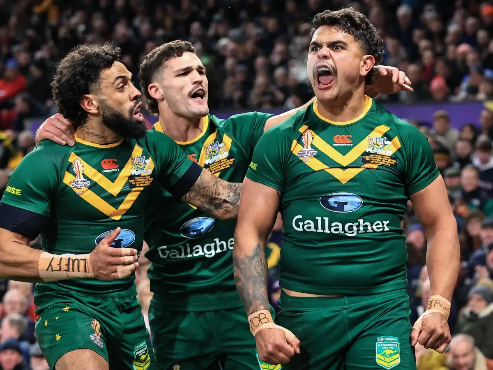
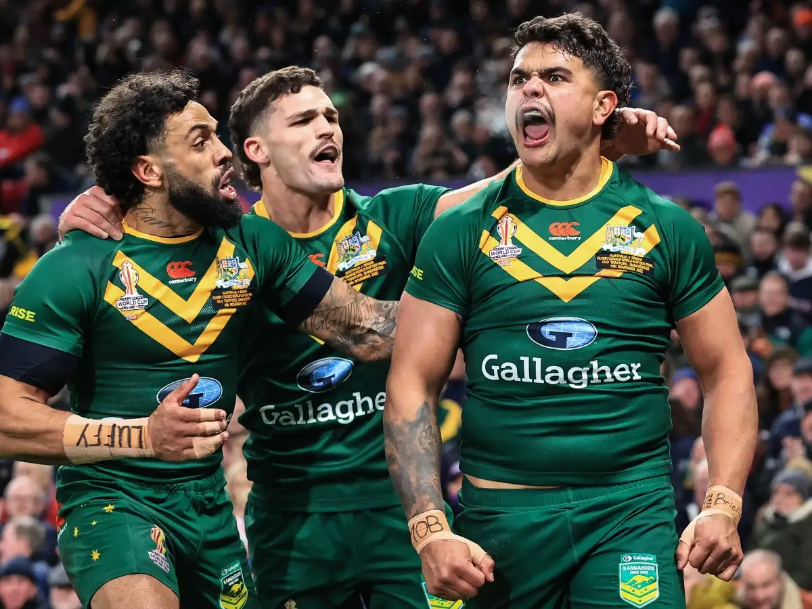

Major Rugby Tournaments
Rugby boasts several premier tournaments that captivate fans around the world. Here are some of the most notable ones:
- Rugby World Cup: Held every four years for both men and women
- Six Nations Championship: An annual competition among European teams
- Rugby Championship: Features teams from the Southern Hemisphere
- Major League Rugby: A growing competition in North America


 
